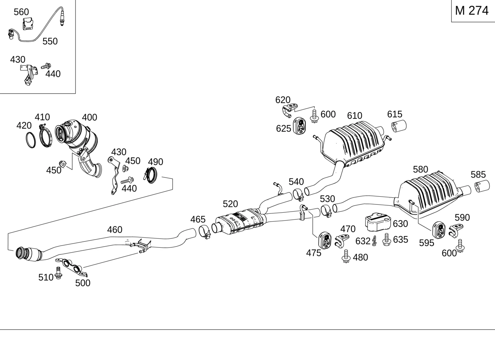

| № | Артикул | Название | Кол. | Примечание | Ограничение |
|---|---|---|---|---|---|
| 160 | A 171 492 04 41 | Держатель (HALTER) | 1 | ЦЕНТР. ГЛУШИТ. СПРАВА | -U77 |
| 170 | A 203 492 01 44 | Подвесное кольцо (AUFHAENGERING) | 1 | ЦЕНТР. ГЛУШИТ. СПРАВА | -U77 |
| 180 | N 910105 008008 | Винт с 6-гранной головкой (SECHSKANTSCHRAUBE) | 1 | Держатель справа к кузову; M8X16 | (M271/M274/M276/M651+(803/804/805/806))+-(M152/U77) |
| 210 | A 171 490 11 27 | Насадка выпускной трубы (ENDROHRBLENDE) | 1 | Выпускная труба сзади слева | (802/803/804/805/806)+(M271/M274/M276/M651) |
| 210 | A 171 490 05 27 | Накладка (BLENDE) | 1 | Выпускная труба сзади слева | (802/803/804/805/806)+(M271/M274/M276/M651) |
| 220 | A 171 492 08 41 | Держатель (HALTER) | 2 | ГЛУШИТЕЛЬ СЛЕВА | -U77 |
| 230 | A 203 492 01 44 | Подвесное кольцо (AUFHAENGERING) | 2 | ГЛУШИТЕЛЬ СЛЕВА | -U77 |
| 240 | N 910105 008008 | Винт с 6-гранной головкой (SECHSKANTSCHRAUBE) | 2 | ДЕРЖАТ.ЗАДН.ГЛУШИТ. СЛЕВА И СПРАВА НА КУЗОВЕ; M8X16 | -(M152/U77) |
| 260 | A 171 490 12 27 | Насадка выпускной трубы (ENDROHRBLENDE) | 1 | ВЫХЛОП. ТРУБА СЗАДИ СПРАВА | (801/802/803/804/805/806)+(M271/M274/M276/M651) |
| 270 | A 171 492 06 41 | Держатель (HALTER) | 2 | ГЛУШИТЕЛЬ СПРАВА | -U77 |
| 280 | A 203 492 01 44 | Подвесное кольцо (AUFHAENGERING) | 2 | ГЛУШИТЕЛЬ СПРАВА | -U77 |
| 400 | A 274 140 02 08 | Трубка выпуска ОГ (ABGASLEITUNG) | 1 | Спереди Рулевое управление: Влево [697] ДЕТАЛЬ ПОСТАВЛЯЕТСЯ ТОЛЬКО/ИЛИ ТАКЖЕ КАК ЗАП.ЧАСТЬ | M274 |
| 400 | A 274 140 18 08 | Трубка выпуска ОГ (ABGASLEITUNG) | 1 | Спереди Рулевое управление: Влево [697] ДЕТАЛЬ ПОСТАВЛЯЕТСЯ ТОЛЬКО/ИЛИ ТАКЖЕ КАК ЗАП.ЧАСТЬ | M274+945 |
| 400 | A 274 140 16 08 | Трубка выпуска ОГ (ABGASLEITUNG) | 1 | Спереди Рулевое управление: Вправо [697] ДЕТАЛЬ ПОСТАВЛЯЕТСЯ ТОЛЬКО/ИЛИ ТАКЖЕ КАК ЗАП.ЧАСТЬ | M274+(803/804/805/806) |
| 400 | A 274 140 03 00 | Трубка выпуска ОГ (ABGASLEITUNG) | 1 | Спереди Рулевое управление: Вправо [697] ДЕТАЛЬ ПОСТАВЛЯЕТСЯ ТОЛЬКО/ИЛИ ТАКЖЕ КАК ЗАП.ЧАСТЬ | M274+(807/808/809/800/801) |
| 410 | A 000 995 36 33 | Проф. хомут сист. вып. ОГ (PROFILSCHELLE ABGASANLAGE) | 1 | ВЫПУСКНАЯ ТРУБА К ВЫПУСКНОМУ КОЛЛЕКТОРУ | M274 |
| 420 | A 274 142 00 80 | Полуметал. уплотнение (MET.-WEICHSTOFF-DICHTUNG) | 1 | ВЫПУСКНАЯ ТРУБА К ВЫПУСКНОМУ КОЛЛЕКТОРУ | M274 |
| 430 | A 205 547 00 00 | Держатель (HALTER) | 1 | M274+-R | |
| 430 | A 274 142 16 40 | Держатель (HALTER) | 1 | Рулевое управление: Вправо | M274 |
| 440 | N 910143 006000 | Винт с 6-гр. глвк (SECHSRUNDSCHRAUBE) | 1 | КРОНШТЕЙН К МАСЛЯНОМУ КАРТЕРУ; M6X12 | M274 |
| 440 | N 910143 008002 | Винт с 6-гр. глвк (SECHSRUNDSCHRAUBE) | 2 | КРОНШТЕЙН К МАСЛЯНОМУ КАРТЕРУ; M8X25 Рулевое управление: Вправо | M274 |
| 450 | N 000000 004012 | ГАЙКА КОМБИНИРОВАННАЯ (KOMBIMUTTER) | 1 | ДЕРЖАТЕЛЬ НА ВЫХЛОП. ТРУБЕ Рулевое управление: Влево | M274 |
| 450 | N 000000 004012 | ГАЙКА КОМБИНИРОВАННАЯ (KOMBIMUTTER) | 2 | ДЕРЖАТЕЛЬ НА ВЫХЛОП. ТРУБЕ Рулевое управление: Вправо | M274 |
| 460 | A 172 490 24 00 | Трубопровод ОГ пер. (ABGASLEITUNG VORN) | 1 | СПЕРЕДИ Рулевое управление: Влево | M274 |
| 460 | A 172 490 45 00 | Трубопровод ОГ пер. (ABGASLEITUNG VORN) | 1 | СПЕРЕДИ Рулевое управление: Влево | M274+(807/808/809/800/801)+-U21 |
| 460 | A 172 490 72 00 | Трубопровод ОГ пер. (ABGASLEITUNG VORN) | 1 | СПЕРЕДИ Рулевое управление: Влево | M274+(807/808/809/800/801)+-(U21/472) |
| 460 | A 172 490 91 00 | Трубопровод ОГ пер. | 1 | СПЕРЕДИ Рулевое управление: Вправо | M274+472 |
| 460 | A 172 490 90 00 | Трубопровод ОГ пер. (ABGASLEITUNG VORN) | 1 | СПЕРЕДИ Рулевое управление: Влево | M274+472 |
| 460 | A 172 490 25 00 | Трубопровод ОГ пер. (ABGASLEITUNG VORN) | 1 | СПЕРЕДИ Рулевое управление: Вправо | M274+(803/804/805/806) |
| 460 | A 172 490 44 00 | Трубопровод ОГ пер. (ABGASLEITUNG VORN) | 1 | СПЕРЕДИ Рулевое управление: Вправо | M274+(807/808/809/800/801) |
| 460 | A 172 490 47 00 | Трубопровод ОГ пер. (ABGASLEITUNG VORN) | 1 | ВЫПУСКНАЯ ТРУБА (ПЕРЕДНЯЯ) И СРЕДНИЙ ГЛУШИТЕЛЬ Рулевое управление: Влево | M274+U21+(807/808/809)+-472 |
| 460 | A 172 490 73 00 | Трубопровод ОГ пер. (ABGASLEITUNG VORN) | 1 | ВЫПУСКНАЯ ТРУБА (ПЕРЕДНЯЯ) И СРЕДНИЙ ГЛУШИТЕЛЬ Рулевое управление: Влево | M274+U21+(807/808/809/800/801)+-472 |
| 460 | A 172 490 48 00 | Трубопровод ОГ пер. (ABGASLEITUNG VORN) | 1 | СПЕРЕДИ Рулевое управление: Вправо | M274+U21+(807/808/809/800/801) |
| 465 | A 002 995 38 02 | Трубный хомут (ROHRSCHELLE) | 1 | ВЫПУСКНАЯ ТРУБА СПЕРЕДИ К ГЛУШИТЕЛЮ; Ø 60 MM | M274 |
| 470 | A 171 492 08 41 | Держатель (HALTER) | 1 | ЦЕНТР. ГЛУШИТЕЛЬ СЛЕВА | -U77 |
| 475 | A 203 492 01 44 | Подвесное кольцо (AUFHAENGERING) | 1 | ЦЕНТР. ГЛУШИТЕЛЬ СЛЕВА | -U77 |
| 480 | N 910105 008008 | Винт с 6-гранной головкой (SECHSKANTSCHRAUBE) | 1 | Держатель слева к кузову; M8X16 | (M271/M274/M276/M651+(803/804/805/806))+-(M152/U77) |
| 490 | A 000 995 14 33 | Проф. хомут сист. вып. ОГ (PROFILSCHELLE ABGASANLAGE) | 1 | КАТАЛИЗАТОР К ПЕРЕДНЕЙ ВЫПУСКНОЙ ТРУБЕ | M274 |
| 500 | A 172 492 04 41 | Держатель (HALTER) | 1 | M274+-M16 | |
| 510 | N 000000 006270 | Винт с 6-гр. глвк (SECHSRUNDSCHRAUBE) | 2 | К КРОНШТЕЙНУ; M8X20 | M274 |
| 520 | A 172 490 28 00 | Дополнительный глушитель (MITTELSCHALLDAEMPFER) | 1 | СЕРЕДИНА | M274+(805/806) |
| 520 | A 172 490 46 00 | Дополнительный глушитель (MITTELSCHALLDAEMPFER) | 1 | СЕРЕДИНА | M274+(807/808/809/800/801)+-U21 |
| 520 | A 172 490 92 00 | Ср. трубопровод ОГ (ABGASLEITUNG MITTE) | 1 | СЕРЕДИНА | M274+472+(800/801) |
| 520 | Q 0000000001 | ВАЖНАЯ ИНФОРМАЦИЯ | 1 | ВЫПУСКНАЯ ТРУБА (ПЕРЕДНЯЯ) И СРЕДНИЙ ГЛУШИТЕЛЬ [001051] ОТДЕЛЬН. ДЕТАЛИ НЕ ПОСТАВЛ. | M274+U21+(807/808/808/800) |
| 530 | A 002 995 50 02 | Трубн. хомут сист.вып. ОГ (ROHRSCHELLE ABGASANLAGE) | 1 | ГЛУШИТЕЛЬ В СЕРЕДИНЕ К ГЛУШИТЕЛЮ СЛЕВА СЗАДИ; Ø 52 MM | M274+(805/806) |
| 530 | A 172 995 00 02 | Трубн. хомут сист.вып. ОГ (ROHRSCHELLE ABGASANLAGE) | 1 | ГЛУШИТЕЛЬ В СЕРЕДИНЕ К ГЛУШИТЕЛЮ СЛЕВА СЗАДИ; Ø 48 MM | M274 |
| 530 | A 002 995 38 02 | Трубный хомут (ROHRSCHELLE) | 1 | ГЛУШИТЕЛЬ В СЕРЕДИНЕ К ГЛУШИТЕЛЮ СЛЕВА СЗАДИ; Ø 60 MM | M274+U21 |
| 540 | A 002 995 50 02 | Трубн. хомут сист.вып. ОГ (ROHRSCHELLE ABGASANLAGE) | 1 | ГЛУШИТЕЛЬ В СЕРЕДИНЕ К ГЛУШИТЕЛЮ СПРАВА СЗАДИ; Ø 52 MM | M274+(805/806) |
| 540 | A 172 995 00 02 | Трубн. хомут сист.вып. ОГ (ROHRSCHELLE ABGASANLAGE) | 1 | ГЛУШИТЕЛЬ В СЕРЕДИНЕ К ГЛУШИТЕЛЮ СПРАВА СЗАДИ; Ø 48 MM | M274 |
| 540 | A 000 995 46 02 | Трубн. хомут сист.вып. ОГ (ROHRSCHELLE ABGASANLAGE) | 1 | ГЛУШИТЕЛЬ В СЕРЕДИНЕ К ГЛУШИТЕЛЮ СПРАВА СЗАДИ; Ø 55 MM | M274+U21 |
| 550 | A 000 542 31 00 | Лямбда-зонд (LAMBDASONDE) | 1 | РЕГУЛ.ЗОНД ПЕРЕД КАТАЛИЗАТ.,СПРАВА | M274 |
| 550 | A 007 542 64 18 | Лямбда-зонд (LAMBDASONDE) | 1 | ДАТЧИК КИСЛОРОДА (ПРАВЫЙ) ПОСЛЕ КАТАЛИТИЧ. НЕЙТРАЛИЗАТОРА ОГ | M274 |
| 560 | A 000 541 01 40 | Держатель (HALTER) | 1 | ПРОВОД ДАТЧИКА; 18 X 24 MM Рулевое управление: Вправо | M274 |
| 580 | A 172 491 08 00 | Основной глушитель (NACHSCHALLDAEMPFER) | 1 | СЗАДИ СЛЕВА | M274+-U21 |
| 580 | A 172 491 20 00 | Основной глушитель (NACHSCHALLDAEMPFER) | 1 | СЗАДИ СЛЕВА | M274+(807/808/809/800/801)+-U21 |
| 580 | A 172 490 50 00 | Заслонка трубы выпускной (ABGASROHRKLAPPE) | 1 | СЗАДИ СЛЕВА | M274+U21+(807/808/809/800/801) |
| 585 | A 171 490 11 27 | Насадка выпускной трубы (ENDROHRBLENDE) | 1 | Выпускная труба сзади слева | (802/803/804/805/806)+(M271/M274/M276/M651) |
| 585 | A 171 490 05 27 | Накладка (BLENDE) | 1 | Выпускная труба сзади слева | (802/803/804/805/806)+(M271/M274/M276/M651) |
| 590 | A 171 492 08 41 | Держатель (HALTER) | 2 | ГЛУШИТЕЛЬ СЛЕВА | -U77 |
| 595 | A 203 492 01 44 | Подвесное кольцо (AUFHAENGERING) | 2 | ГЛУШИТЕЛЬ СЛЕВА | -U77 |
| 600 | N 910105 008008 | Винт с 6-гранной головкой (SECHSKANTSCHRAUBE) | 2 | ДЕРЖАТ.ЗАДН.ГЛУШИТ. СЛЕВА И СПРАВА НА КУЗОВЕ; M8X16 | -(M152/U77) |
| 610 | A 172 491 10 00 | Основной глушитель (NACHSCHALLDAEMPFER) | 1 | СЗАДИ СПРАВА | M274+-U21 |
| 610 | A 172 491 18 00 | Основной глушитель (NACHSCHALLDAEMPFER) | 1 | СЗАДИ СПРАВА | M274+(807/808/809/800/801)+-U21 |
| 610 | A 172 490 49 00 | Трубопровод ОГ задний (ABGASLEITUNG HI) | 1 | СЗАДИ СПРАВА | M274+U21+(807/808/809/800/801) |
| 615 | A 171 490 12 27 | Насадка выпускной трубы (ENDROHRBLENDE) | 1 | ВЫХЛОП. ТРУБА СЗАДИ СПРАВА | (801/802/803/804/805/806)+(M271/M274/M276/M651) |
| 620 | A 171 492 06 41 | Держатель (HALTER) | 2 | ГЛУШИТЕЛЬ СПРАВА | -U77 |
| 625 | A 203 492 01 44 | Подвесное кольцо (AUFHAENGERING) | 2 | ГЛУШИТЕЛЬ СПРАВА | -U77 |
| 630 | A 213 906 18 02 | Регулятор засл.вып.тракт. (ABGASKLAPPENSTELLER) | 1 | ВЫХЛОП. ТРУБА СЗАДИ СЛЕВА | M274+U21+-(805/806) |
| 632 | A 213 492 13 00 | Крепежная скоба (BEFESTIGUNGSBUEGEL) | 1 | ДЛЯ СЕРВОМЕХАНИЗМА ЗАСЛОНКИ | M274+U21 |
| 635 | N 000000 007435 | Винт с 6-гранной головкой (SECHSKANTSCHRAUBE) | 3 | СЕРВОМЕХАНИЗМ ЗАСЛОНКИ К ВЫПУСКНОЙ ТРУБЕ; M6X16 | M274+U21+807 |
Позиций: 70 · подписано на схемах: 70 · колесо — плавный зум в курсор, перетаскивание — пан, двойной клик — зум, клик по артикулу — скопировать · наведите на строку или цифру на схеме — подсветка связки, клик — закрепить.